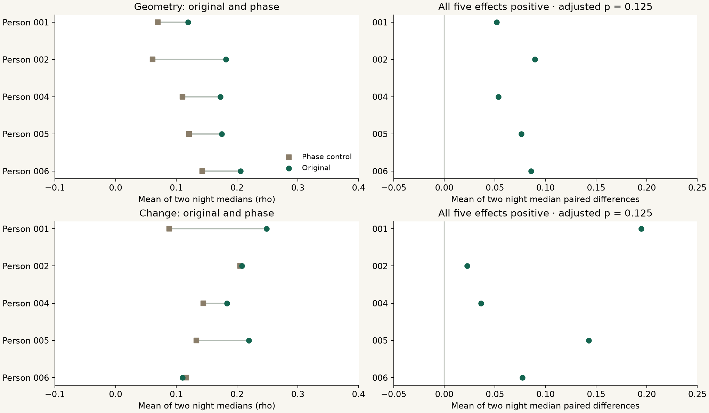

Research Notes · Experiment 011 · September 25, 2026
Two encoders. Some alignment. An open question.
Project subtitle
An LLM’s interpretation of your brainwaves
This run compares numerical EEG encoders. It does not interpret thoughts or run an LLM decoder.
CodeBrain and CBraMod show modest agreement on the same ear-EEG segments. In each of the five paired people, both primary paired original-minus-phase effects are positive. The adjusted tests remain inconclusive: p = 0.125 for geometry and change. This does not establish universal tokens.

What was measured
We reused the 122 thirty-second inputs selected in Experiment 010, including its five input variants per segment. CBraMod completed 610 new forward passes; the 610 archived CodeBrain outputs were reused after input/output hash checks. These are two fixed pretrained EEG encoders producing continuous vectors. No discrete vocabulary is learned here, and no LLM decoder runs.
The paired result
Geometry compares the rankings of 378 pairwise cosine distances among 28 one-second patch vectors. Change compares the 27 adjacent-step distances. Channels are averaged and the first/last patches are excluded; each retained vector still has the model’s whole thirty-second context. These are within-segment relationships, not directly localized waveform inflections or evidence that a particular event repeats across nights.
| Measurement | Paired people | Blocks | Original rho | Phase rho | Paired difference | Raw p | Adjusted p |
|---|---|---|---|---|---|---|---|
| Geometry | 5 | 110 | 0.1707 | 0.1008 | 0.0713 | 0.0625 | 0.125 |
| Change | 5 | 110 | 0.1940 | 0.1375 | 0.0947 | 0.0625 | 0.125 |
Why five people matters
The primary analysis uses five people, ten recordings and 110 selected blocks. All 122 blocks from six people and twelve recordings remain in descriptive outputs. Person 003 has one selected block in the first night and fails the unchanged minimum of three per night. Each block’s effect is original rho minus phase-control rho. We take the median of those differences within a recording, the mean across its person’s two nights, and then an unweighted mean across complete people. Separately summarized original and phase medians need not subtract to the paired difference.
The test cannot settle this with five people
The exact two-sided sign-flip test enumerates all 32 sign assignments to the five person-level effects. Both outcomes reach its smallest attainable raw p value, 2/32 = 0.0625. Correcting the two primary tests gives 0.125. That resolution limit was specified before the run; we did not change tests after seeing the outcome. The test also assumes independent people and sign symmetry under a zero effect. A larger effect or more windows cannot overcome this five-person resolution limit. These p values are not probabilities that a universal language exists.
What the phase control removes
Both models receive the same independently phase-randomized signal for each block. This preserves each channel’s Fourier magnitudes while changing local timing and relations among channels. It is a nuisance comparison, not a complete biological null. Positive agreement also remains after this transformation, so shared spectra, processing or other structure can contribute. The cross-model table reports all five variants without selecting a winner.
| Input to both models | Geometry rho | Change-profile rho |
|---|---|---|
| original | 0.1707 | 0.1940 |
| gain half | 0.1728 | 0.2189 |
| polarity flip | 0.1721 | 0.2077 |
| channel reverse | 0.1445 | 0.1335 |
| independent phase | 0.1008 | 0.1375 |
How each model responds to controls
These descriptive rows compare each encoder with itself under four input changes. Correlations and embedding displacement answer different questions. No secondary p values were calculated. All per-block, recording and person rows, including exclusions, are available in the data release.
| Model | Control vs original | Geometry rho | Change rho | Embedding RMS displacement |
|---|---|---|---|---|
| codebrain | gain half | 0.9602 | 0.9670 | 0.3506 |
| codebrain | polarity flip | 0.6983 | 0.8175 | 0.7773 |
| codebrain | channel reverse | 0.9151 | 0.9354 | 0.2778 |
| codebrain | independent phase | 0.0333 | -0.0278 | 0.6131 |
| cbramod | gain half | 0.8639 | 0.8609 | 0.0199 |
| cbramod | polarity flip | 0.6965 | 0.7400 | 0.0427 |
| cbramod | channel reverse | 0.7519 | 0.7381 | 0.0165 |
| cbramod | independent phase | 0.0383 | 0.0091 | 0.0313 |
Transparent numerical comparisons
The original inputs also retain the frozen waveform-shape, spectral and sensor-coordination descriptor comparisons. These reference views have explicit engineered assumptions. Their descriptive correlations do not give the learned vectors semantic meaning.
| Model | Numerical descriptor | Geometry rho | Change rho |
|---|---|---|---|
| codebrain | morphology | 0.0815 | 0.0342 |
| codebrain | spectrum | 0.0381 | 0.0141 |
| codebrain | coordination | 0.0419 | 0.0270 |
| cbramod | morphology | 0.0350 | 0.0497 |
| cbramod | spectrum | 0.0312 | 0.0171 |
| cbramod | coordination | 0.0332 | 0.0489 |
Anonymous input, learned priors
The model input contains only four numerical ear channels: no identity, history, sleep-stage, task or semantic labels. Curator keys join only during evaluation so that two nights from one person are not counted as two independent people. The pretrained encoders carry learned priors, and our filters and patching impose choices. Anonymous numerical input is therefore not an assumption-free blank slate. Both source architectures were developed with scalp EEG; four-ear-channel execution does not validate spatial equivalence. Pretraining overlap remains unknown.
Exposure and preprocessing
The 61 selected minutes come from the already examined first four hours of twelve EESM23 recordings. The preceding census contained 5,760 candidate blocks, of which 2,973 passed fixed quality rules; selection used quality and time rather than model agreement. This experiment adds no source people or recorded hours. Participants 007–010 and unexamined later sessions remain reserved. The inherited input processing is 0.3–75 Hz, a 60 Hz notch, resampling from 250 to 200 Hz and scaling calibrated microvolts as µV/100. That numerical scale follows the documented CodeBrain pretraining convention and the audited CBraMod trainer. It does not validate amplitude distributions, reference/calibration equivalence or four-ear-channel positional mapping against either model’s scalp pretraining inputs. Our per-block filtering is an EEGT engineering choice, not byte-identical author preprocessing. The source reports 50 Hz mains, so the 60 Hz notch does not specifically remove it. The first and last selected blocks had already been used in adapter checks; this is exposed development data, not pristine validation.
Reproducibility and corrections
The new inference took 72.95 seconds with one numerical thread and about 524.1 MiB peak process RSS. The protocol and initial code manifest were sealed before inference. A later analysis amendment fixed integer serialization and removed an unnecessary checkpoint-file requirement from offline evaluation. It changed no metric, selection, aggregation or model forward; the original code, failed partial output and amendment remain available. A separate calculation checked 6,858 scalar/hash/database assertions; its largest numerical discrepancy was below 4×10⁻¹⁶. Offline reproduction matched all scientific values and SQLite contents. Database file hashes can differ across SQLite runtimes. Native agent monetary cost is UNKNOWN; no paid model API call was made per window.
What comes next
Test direct extrema, inflections, cycles and bursts against known synthetic waves, noise, gaps and artifacts, then compare their timing on exposed EEG under a new frozen protocol. After the methods are fixed, test new people and new sessions separately and incorporate the newly qualified open-data intake into a consolidated database. Shared numerical structure is worth testing further; semantic meaning, diagnosis and physical Neurable transfer remain unestablished.
Sources and reproducible data
EESM23 source v1.0.0 · Pinned CodeBrain source · CodeBrain pretraining convention · CBraMod pretraining scale · Pinned CBraMod source · Pinned CBraMod weights · Frozen protocol · Validation record · Release and data
Public EEG: CC0; project and CBraMod code: MIT. Upstream model notices are retained; checkpoints remain upstream.
All numerical results and exclusions · Earlier Experiment 010